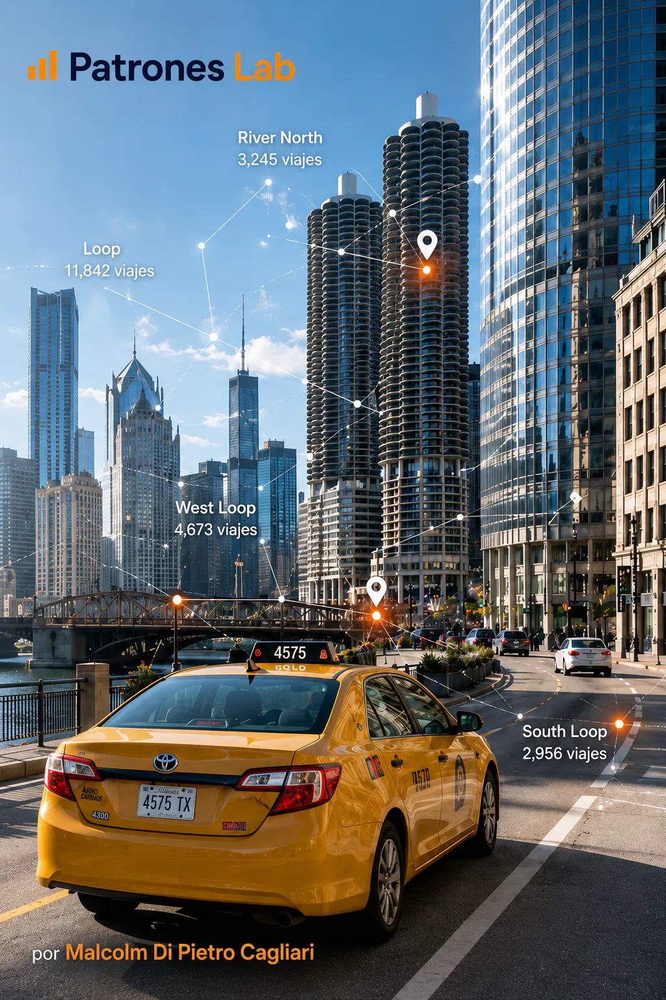

Proyecto 12 · Análisis geoespacial
Análisis Geoespacial de los Viajes en Taxi
Análisis de viajes de taxi en Chicago con foco en ubicación geográfica, movimientos entre puntos, predominios de zonas y rutas.
CONTEXTO Y OBJETIVO
Entender cómo se distribuyen territorialmente los viajes reportados de taxi y qué zonas concentran mayor movimiento urbano.
DATOS Y DIAGNÓSTICO
- Uso de community areas y coordenadas como ejes de análisis territorial.
- Construcción de variables y visuales para observar zonas de origen, destino y flujos principales.
- Lectura geoespacial para complementar la visión operativa del proyecto Taxi Trips Chicago.
ENTREGA Y APRENDIZAJE
La entrega convierte los viajes en una lectura espacial, permitiendo interpretar demanda, concentración y movilidad desde una perspectiva territorial.